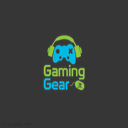
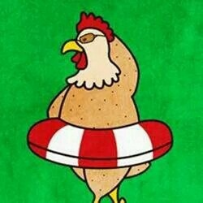
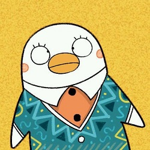
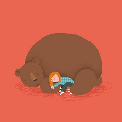

关于你们的团队
解释团队来历，介绍团队成员
首先是任务学习路径，这里主要针对零基础或者刚刚入门的同学，已经有不错的基础，并且有明确学习目标的同学，完全可以根据兴趣自由选择任务进行实践。
2017春季班概述
课程多数题目的解决方案都不是唯一的，这和我们在实际工作中的情况也是一致的。因此，我们的要求不仅仅是实现设计稿的效果，更是要多去思考不同的解决方案，评估不同方案的优劣，然后使用在该场景下最优雅的方式去实现。那些最终没有被我们采纳的方案，同样也可以帮助我们学到很多知识。所以，我们列出的参考资料未必是实现需求所必须的。有的时候，实现题目的要求很简单，甚至参考资料里就有，但是背后的思考和亲手去实践却是任务最关键的一部分。在学习这些资料时，要多思考，多提问，多质疑。相信通过和小伙伴们的交流，能让你的学习事半功倍。

团队名称


